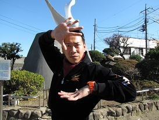

난이도별 죠죠서기
죠죠서기에도 나름 『난이도』 라는 것이 있습니다.
초보자분들이 따라하기 쉬운 것부터 고수들만 할 수 있는 것까지 종류는 다양합니다.
Level 1
첫 번째로 초보자분들이 따라하기 쉬운
죠나단서기
입니다.1. 왼팔을 앞으로 뻗는다.
2. 콧날에 왼손 집게 손가락을 맞춘다.
3. 오른쪽 어깨를 올린다.
4. 오른손을 뻗으며 구호를 외친다. ※ 구호 "인간 찬가는" "용기의 찬가!"
안나수이서기

1. 오른손을 머리에 얹는다.
2. 오른쪽 팔꿈치를 눈 높이까지 올린다.
3. 왼손을 사진과 같이 팔에 얹는다.
4. 턱을 당기고 상대나 카메라 등을 엿본다.
죠스케서기
1. 오른팔을 앞에 놓고 엄지와 집게손가락 사이로 들여다본다.
2. 왼손은 목 살짝 아래에 수평으로 든다.
3. 허리를 회전시켜 왼발을 오른쪽에 비스듬히둔다.
4. 왼발의 발뒷꿈치를 든다.
5. 엉덩이를 조금 뒤로 당긴다.
Level 2
죠셉서기

1. 팔을 머리 뒤로 넘기고, 왼팔 앞으로 교차시킨다.
2. 왼손의 엄지 손가락을 접는다.
3. 오른손의 손가락을 위로 올린다.
4. 허리를 왼쪽을 향하게 한다.
5. 얼굴은 왼쪽 대각선 아래를 향하고 시선은 정면을 향하게 한다.
죠르노서기(갱스터를동경하며서기)


1. 오른쪽 가슴을 연다.
2. 왼손은 옷을 아래로 당긴다.
3. 허리를 오른쪽으로 살짝 당긴다.
4. 야심가득히 웃는다.
Level 3
죠타로서기
1. 오른쪽 팔꿈치를 눈높이보다 높게 올린다.
2. 오른쪽 손목을 직각으로 접는다. 꽤 힘을 넣지 않으면 손목이 직각이되지 않기 때문에 주의해야한다.
3. 왼쪽 손목을 배꼽 앞에서 오른손과 평행하게 접는다.
4. 오른쪽 사선 위를 본다.
5. 미소를 지으며 구호를 외친다. ※ 구호 "네놈은 나를!" "화나게했다!"
카쿄인서기

1. 오른손의 집게 손가락으로 하늘을 가리킨다.
2. 왼손은 주먹을 쥔 상태에서 검지와 새끼 손가락을 세운다.
3. 시선은 위를 향한다(가장중요하다)
Level 4
죠타로서기(야레야레다제)


1. 왼발을 앞으로 뻗는다.
2. 왼발의 뒷꿈치를 올리고 뒤로 젖힌다.
3. 허리를 젖히고 오른손으로 가리키며 구호를 말한다. ※ 구호 "야레야레다제."
죠셉서기2


1. 왼손의 손가락을 만든다.
2. 왼팔을 세우고 손목을 구부린다.
3. 오른팔을 교차시킨다.
Level 5
죠디오서기(합체기술)

죠나단
1. 얼굴을 옆으로 향하고 오른손을 손바닥이 바깥 쪽을 향하게 내민다.
2. 분노의 표정을 짓는다.
디오
1. 양손을 바닥에 붙이고 팔꿈치를 구부린다.
2. 오른발을 왼발 위에 건다.
블랙모어서기
1. 오른손이 하늘을 향하게 비튼다.
2. 왼손의 우산은 얼굴높이정도로 든다.
3. 오른발은 발끝을 들고 왼발은 뒷꿈치로 서서 비틀비틀거리는듯 선다.
4. 오른쪽 하단을 쳐다보며 "토호호" 하고 전력으로 웃는다.
Level 6
리조토서기
1. 오른쪽 발을 앞으로 뻗는다.
2. 팔꿈치를 윗쪽으로 당겨 올린다.
3. 오른쪽 발꿈치를 든다.
4. 머리를 오른쪽 대각선 위로 치켜든다.
5. 구호를 외친다 ※ 구호 "마지막이다! 먹어라!" "메탈리카!"
Level 7
DIO서기
1. 양손을 하늘을 향하게 하며 사과를 쥔 듯이 하고, 높이는 자신의 가슴높이정도로, 폭은 약 1m정도로 편하게 벌린다.
2. 양 발꿈치를 들어올린다.
3. 등을 젖힌다.
4. 구호를 외친다 ※ 구호 "무다무다무다앗!" "wryyyyy(으리이이)"
하이에로펀트서기

1. 양 손의 모양을 잡는다.
2. 왼손가락은 상대를 향하고, 오른손가락은 하늘을 향한다.
3. "에메랄드스플래쉬!" 라고 외치 오른발을 뒤로 빼서 위로 올린다.
4. 이 자세를 필사적으로 유지한다.
DIO서기2

1. 양 손가락을 마지막의 한 관절에서 구부린다.
2. 오른발을 올린다.
3. 상반신을 당겨올린다.
4. 사악한 미소를 짓는다.
Level 8
나란챠서기
1. 오른쪽으로 비스듬히 눕는듯 앉는다.
2. 왼손을 가볍게 잡고 뺨에 갖다댄다.
3. 오른손을 왼팔로 크로스시킨다.
4. 왼쪽 허벅지를 땅바닥에 직각으로 세운다
5. 오른발을 왼쪽 정강이에 올려놓는다.
6. 두 다리 발끝을 앞을 향하여 똑바로 향하게한다.
7.입을 삐죽거린다.
Level 9
죠르노서기(의자사용서기)
1. 오른쪽 무릎을 아슬아슬하게 의자 위에 둔다.
2. 오른쪽 팔꿈치를 등받이에 얹는다.
3. 왼팔을 의자의 난간에 얹는다.
4. 얼굴과 엉덩이를 동시에 올린다.
킬러퀸서기
1. 양 손의 손가락을 검지와 새끼손가락만 세운다.
2. 오른팔을 들어올린다.
3. 양 팔꿈치를 가지런히 하고 왼팔을 내린다. 손등은 앞을 향하게 한다.
4. 허리를 뒷쪽으로 꺾으며 몸을 왼쪽으로 살짝 비틀면서 "킬러 퀸!"
Level 10
죠나단서기(파문!서기)
1. 양팔을 앞뒤로 벌린다.
2. 왼쪽 손목을 오른쪽으로 구부리면서 오른손가락을 손으로부터 구부러트린다. 오른손목도 오른쪽으로 구부린다
3. 입술을 살짝 깨문다.
4. 양발을 몸의 왼쪽을 향하게 하고, 무릎꿇고 앉은 것 같은 자세로 점프한다.
5. 그대로 공중에서 정지한다.
썬더크로스스플릿어택(다이아서기)
1. "걸렸구나 바보가!"라고 외치며 오른팔을 바깥을향하게하여 양팔로 X 표시를 만든다.
2. "썬더 크로스 스플릿 ..." 이라고 외친다.
3. "어택!" 이라고 외치며 다리를 벌리며 점프한다.
4. 공중에서 정지한다.
Level ∞
산타나서기

1. 할 수 없다.
2. 역시 할 수 없다.
3. 절대 할 수 없다.
4. 정 하고싶다면 물구나무서기를 하고 온 몸을 뒤튼다. 물론 이 자세 도중엔 신체의 모든 뼈를 으스러트려야한다.